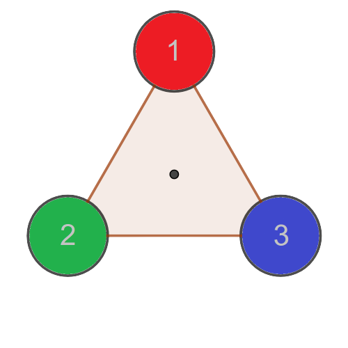

S3 เป็นกรุปสมมาตรของ {1,2,3}.
คำชี้แจง: วางเคอร์เซอร์บนสามเหลี่ยมแต่ละรูปเพื่อดูการเคลื่อนไหว
|  |
ตารางข้างล่างนี้เป็นการสรุป
| e | r | r2 | s | sr | sr2 |
| \( \begin{pmatrix} 1 & 2 & 3 \\ 1 & 2 & 3 \end{pmatrix} \) | \( \begin{pmatrix} 1 & 2 & 3 \\ 2 & 3 & 1 \end{pmatrix} \) | \( \begin{pmatrix} 1 & 2 & 3 \\ 3 & 1 & 2 \end{pmatrix} \) | \( \begin{pmatrix} 1 & 2 & 3 \\ 1 & 3 & 2 \end{pmatrix} \) | \( \begin{pmatrix} 1 & 2 & 3 \\ 3 & 2 & 1 \end{pmatrix} \) | \( \begin{pmatrix} 1 & 2 & 3 \\ 2 & 1 & 3 \end{pmatrix} \) |
ความหมายของการแปลงแต่ละตัว:
สัญลักษณ์ \( \begin{pmatrix} 1 & 2 & 3 \\ a_1 & a_2 & a_3 \end{pmatrix} \) สื่อความหมายทางเรขาคณิตดังนี้
หมายเหตุ: สมาชิกบางตัวของ S3 สามารถมองได้มากกว่าหนึ่งแบบ ลองวางเคอร์เซอร์บนสามเหลี่ยมแต่ละรูปเพื่อดูการเคลื่อนไหว
| r2 = \( \begin{pmatrix} 1 & 2 & 3 \\ 3 & 1 & 2 \end{pmatrix} \) สามารถมองได้เป็น | หรือ | ||
| sr = \( \begin{pmatrix} 1 & 2 & 3 \\ 3 & 2 & 1 \end{pmatrix} \) สามารถมองได้เป็น | หรือ | ||
| sr2 = \( \begin{pmatrix} 1 & 2 & 3 \\ 2 & 1 & 3 \end{pmatrix} \) สามารถมองได้เป็น | หรือ |